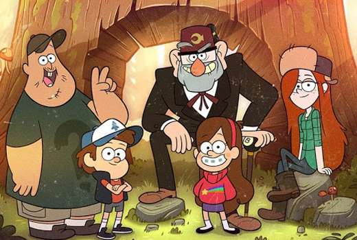
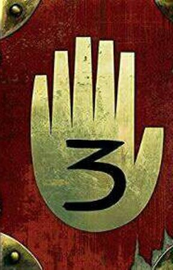

Gravity Falls
 "Gravity Falls" es una serie animada creada por Alex Hirsch que se emitió en Disney Channel y Disney XD entre 2012 y 2016. La serie sigue las aventuras de los gemelos Dipper y Mabel Pines, quienes son enviados a pasar el verano con su tío abuelo Stan en el misterioso pueblo de Gravity Falls, Oregon. Allí, descubren que nada es lo que parece y se ven envueltos en fenómenos paranormales y misterios sobrenaturales.
"Gravity Falls" es una serie animada creada por Alex Hirsch que se emitió en Disney Channel y Disney XD entre 2012 y 2016. La serie sigue las aventuras de los gemelos Dipper y Mabel Pines, quienes son enviados a pasar el verano con su tío abuelo Stan en el misterioso pueblo de Gravity Falls, Oregon. Allí, descubren que nada es lo que parece y se ven envueltos en fenómenos paranormales y misterios sobrenaturales.

- Dipper Pines: Es el hermano gemelo de Mabel y un apasionado por resolver misterios. Siempre lleva un gorro con un pino y un diario que encontró en el bosque.
- Mabel Pines: La hermana gemela de Dipper, conocida por su actitud alegre y optimista. Siempre lleva suéteres coloridos y únicos.
- Stanford Pines: El tío abuelo de los gemelos, propietario de la Cabaña del Misterio, una trampa para turistas llena de curiosidades y trucos.
- Soos Ramírez: Un trabajador de la Cabaña del Misterio, amigo de los gemelos y un personaje muy entrañable.
- Wendy Corduroy: Trabaja en la Cabaña del Misterio y es el interés amoroso de Dipper.

- Tourist Trapped: Introduce a los personajes principales y establece el tono misterioso y aventurero de la serie.
- Dreamscaperers:introduce al villano Bill Cipher y explora los sueños de los personajes principales.
- Not What He Seems: Revela uno de los mayores secretos de la serie y cambia la dinámica entre los personajes principales.
- Weirdmageddon: Una serie de episodios que concluyen la serie con un enfrentamiento épico entre los personajes y Bill Cipher.